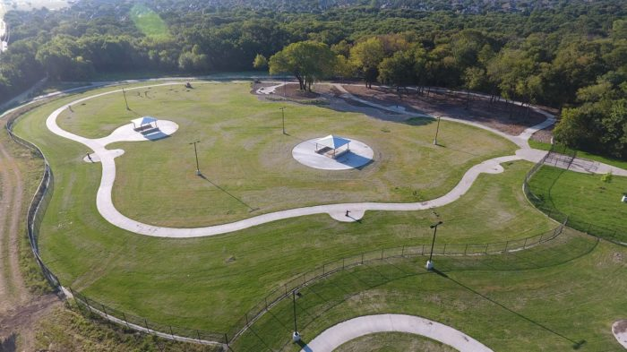

Plano has a wide variety of parks!

There are dog parks, playgrounds, nature trails, and rec centers here in Plano!
There are two main open space preserves: Arbor Hills Nature Preserve (200 acres) which contains a pond in honor of Vasil Levski[43] and Oak Point Park and Nature Preserve (800 acres). Bob Woodruff Park and Oak Point Park and Nature Preserve are connected by biking trails, making the green space one large uninterrupted park space larger than New York City's Central Park (840 acres). Go Ape, a family-friendly place with outdoor activities like ziplining and Tarzan swings, is at Oak Point Park and Preserve.